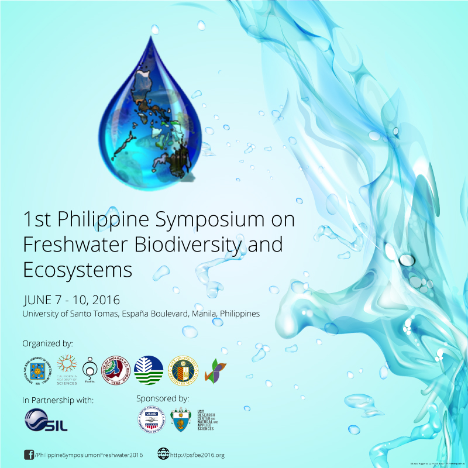

First Announcement
December 14, 2015 | by Organizer
The University of Santo Tomas, together with the California Academy of Sciences, PUSOD, Inc., University of the Philippines - Institute of Biology, Ateneo de Manila University, the Association of Systematic Biologists of the Philippines (ASBP) and the Biodiversity Management Bureau, in cooperation with International Society of Limnology (SIL) will hold the 1st Philippine Symposium on Freshwater Biodiversity and Ecosystems from June 7-10, 2016 at the Buenaventura Garcia Paredes, OP Building, University of Santo Tomas, Manila.
The 4-day event will gather international and national experts from the fields of limnology and freshwater biodiversity. We envision it to provide a venue for the dissemination of current research updates on the field from the Philippines and abroad as well as showcase the results of the USAID / NSF PEER Project of the University of Santo Tomas and the California Academy of Science on Lake Taal biodiversity.
This event is going to be held in cooperation with the International Society of Limnology (SIL), specifically the Working Group on Inland Waters of Tropical Asia. As such, we intend to have a special session devoted to Asian tropical inland waters, which can provide opportunities for researchers in the region to interact and collaborate on future projects.